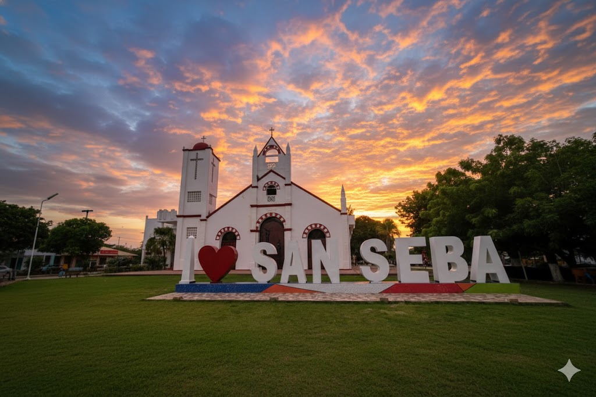

Siglo XVIII – XIX
Los ritmos africanos llegan al Caribe colombiano. Las comunidades afrodescendientes conservan tambores, cantos y rituales que serán la base del Chande.

Explora las etapas y los guardianes de esta tradición costeña. Desplázate para descubrir.
Los ritmos africanos llegan al Caribe colombiano. Las comunidades afrodescendientes conservan tambores, cantos y rituales que serán la base del Chande.
En San Basilio de Palenque, tamboreros y cantadoras preservan los ritmos ancestrales que influencian el Chande tradicional.

El Chande se integra a celebraciones, procesiones y fiestas patronales en Bolívar, Sucre y Córdoba.

Las mujeres cantadoras llevan el liderazgo ritual, transmiten la tradición y enseñan los cantos responsoriales.

Maestros del tambor que enseñan los toques, afinación y el espíritu del Chande a las nuevas generaciones.
Procesos culturales y líderes comunitarios mantienen viva la tradición, asegurando que el Chande no desaparezca.